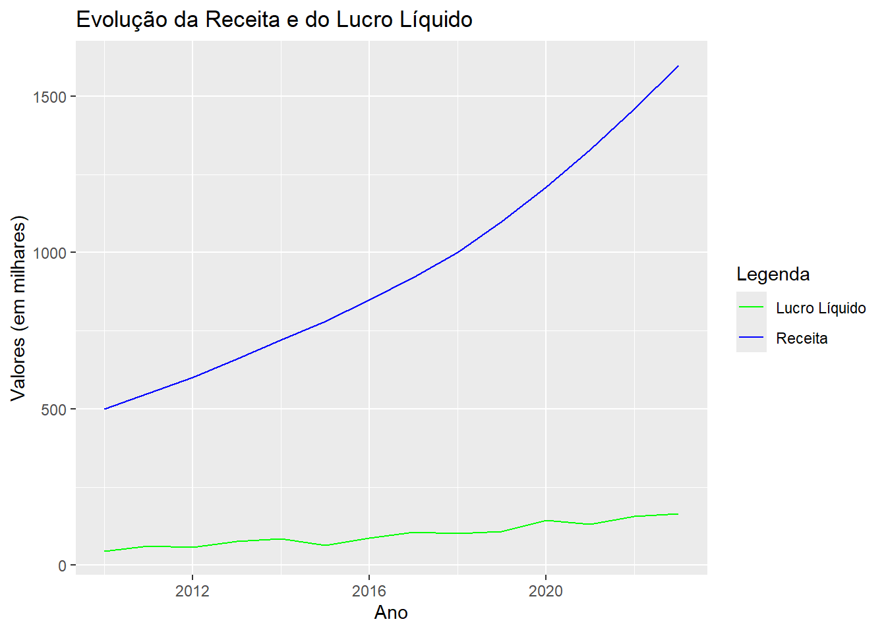
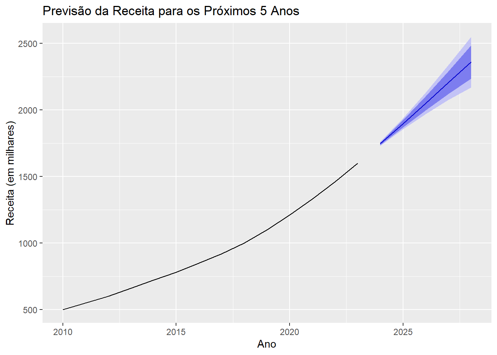

A informação contábil é uma ferramenta poderosa para previsão e tomada de decisões estratégicas nas organizações. Segundo o CPC 00 (Estrutura Conceitual para Elaboração e Divulgação de Relatório Contábil-Financeiro), a informação contábil deve possuir características qualitativas fundamentais como relevância e representação fidedigna, e características qualitativas de melhoria como comparabilidade, verificabilidade, tempestividade e compreensibilidade.
Neste post, vamos explorar como essas características se traduzem no poder preditivo da informação contábil usando dados fictícios e a linguagem R.
Objetivo
Nosso objetivo é demonstrar, por meio de um exemplo prático, como a análise de demonstrações financeiras pode prever o desempenho futuro de uma empresa. Utilizaremos dados fictícios para simplificação.
Passo a Passo em R
Coleta e Preparação dos Dados
Primeiramente, vamos criar um conjunto de dados fictícios representando as demonstrações financeiras de uma empresa ao longo dos anos.
Vamos analisar graficamente a evolução da receita e do lucro líquido ao longo dos anos.
# Visualização dos dadosggplot(dados, aes(x = ano)) +geom_line(aes(y = receita, color ="Receita")) +geom_line(aes(y = lucro_liquido, color ="Lucro Líquido")) +labs(title ="Evolução da Receita e do Lucro Líquido",x ="Ano",y ="Valores (em milhares)") +scale_color_manual(name ="Legenda", values =c("Receita"="blue", "Lucro Líquido"="green"))

Modelo Preditivo
Utilizaremos um modelo de série temporal para prever a receita dos próximos anos.
# Modelagem de série temporalts_receita <-ts(dados$receita, start =c(2010), frequency =1)# Ajustar um modelo ARIMAmodelo_arima <-auto.arima(ts_receita)# Previsão para os próximos 5 anosprevisao <-forecast(modelo_arima, h =5)# Visualização da previsãoautoplot(previsao) +labs(title ="Previsão da Receita para os Próximos 5 Anos",x ="Ano",y ="Receita (em milhares)")

O gráfico de previsão de receita para os próximos cinco anos mostra uma tendência de crescimento contínuo, com a linha preta indicando a projeção central e áreas sombreadas em azul representando os intervalos de confiança de 80% e 95%. A receita histórica desde 2010 revela um aumento consistente, e a projeção sugere que esse crescimento continuará até 2028, com a incerteza aumentando ao longo do tempo, conforme evidenciado pela ampliação dos intervalos de confiança. Esses intervalos são essenciais para o planejamento estratégico e a análise de risco, fornecendo uma faixa de valores esperados em vez de um único valor fixo.
A falha na linha do gráfico ocorre na transição entre os dados históricos e as previsões futuras, destacando o ponto onde terminam as observações reais e começam as estimativas geradas pelo modelo. Esta descontinuidade é intencional para diferenciar claramente os dados observados das projeções, ajudando a evitar confusão ao visualizar a tendência histórica e a previsão de crescimento futuro da receita.
Interpretação dos Resultados
A partir do modelo preditivo, podemos analisar a tendência futura da receita da empresa, possibilitando uma melhor tomada de decisão.
# Exibir previsõesprint(previsao)
Point Forecast Lo 80 Hi 80 Lo 95 Hi 95
2024 1746.438 1736.867 1756.009 1731.801 1761.076
2025 1897.021 1869.968 1924.075 1855.647 1938.396
2026 2050.273 1997.764 2102.782 1969.967 2130.579
2027 2205.243 2119.915 2290.571 2074.745 2335.740
2028 2361.319 2236.458 2486.180 2170.360 2552.277
A previsão de receita para os anos de 2024 a 2028 mostra um crescimento contínuo, começando em R$ 1746.44 em 2024 e alcançando R$ 2361,32 em 2028. Os intervalos de confiança de 80% e 95% indicam as faixas nas quais a receita provavelmente se situará, refletindo diferentes níveis de certeza. Em 2024, por exemplo, a receita deve estar entre R$ 1736,87 e R$ 1756,01 com 80% de confiança e entre R$ 1731,80 e R$ 1761,08 com 95% de confiança. Esses intervalos ajudam a quantificar a incerteza nas previsões, essenciais para o planejamento financeiro e análise de risco.
Conclusão
Através desse exemplo simples com dados fictícios, observamos como a informação contábil, quando analisada e modelada adequadamente, pode fornecer previsões valiosas para o planejamento estratégico das organizações. As demonstrações financeiras, alinhadas às normas contábeis do CPC 00 R2, são essenciais para garantir que essas previsões sejam baseadas em dados relevantes e fidedignos.
Utilizar a linguagem R para a análise preditiva permite explorar diversos modelos e técnicas estatísticas, facilitando a extração de insights que podem direcionar o crescimento sustentável da empresa.
Este post ilustra a importância de uma contabilidade bem estruturada e da análise de dados para antecipar e responder às dinâmicas do mercado, reforçando o poder preditivo da informação contábil conforme as diretrizes do CPC 00 R2.